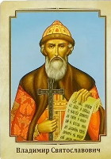

Владимир Святославич

Князь Владимир I Святославич.
Владимир I Святославич (др.-рус. Володимеръ Свѧтославичь, ок. 960 — 15 июля 1015)
— киевский великий князь,
при котором произошло крещение Руси.
Владимир Святой стал новгородским князем в 970, захватил киевский престол в 978 году.
В 988 выбрал христианство в качестве государственной религии Киевской Руси.